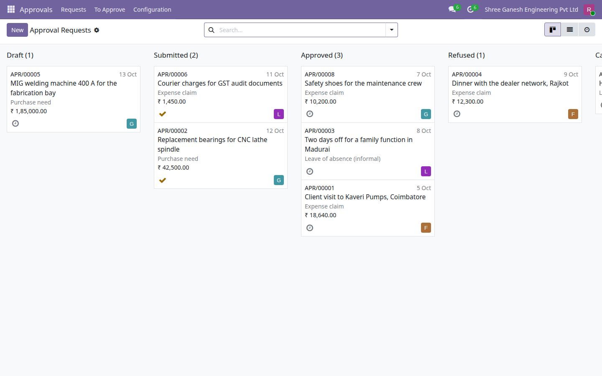
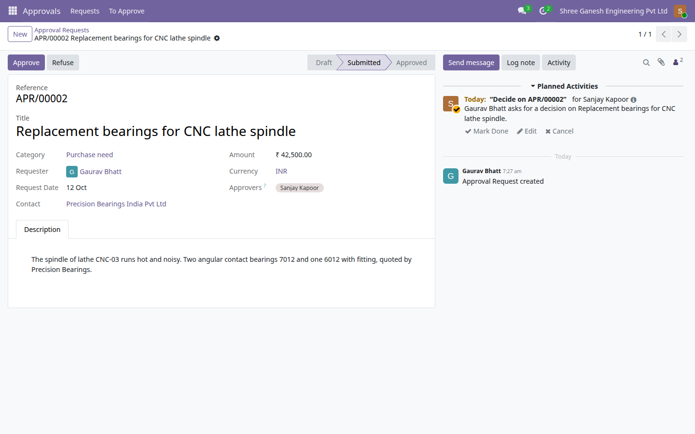
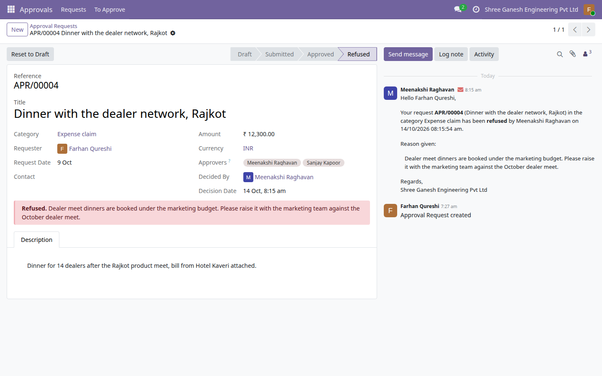

Someone needs a yes or a no: an expense to be paid back, a day away, something to buy. They raise a numbered request in a category, every approver of that category who can act on it gets a to-do, one of them approves or refuses, and the requester gets the decision by email. Chatter and field tracking keep the whole exchange on the record, and nobody can decide on a request they asked for or raised.

The Approval Requests board, one column per state in workflow order: a draft, two submitted requests waiting for an approver, three approved and one refused, the cancelled one in the last column; each card shows reference, date, category, amount and requester.

Request APR/00002 (Purchase need, ₹42,500.00) as its approver Sanjay Kapoor sees it: Approve and Refuse in the header and his to-do, raised on submit, in the chatter.

Refused request APR/00004 as the requester sees it: the reason given by Meenakshi Raghavan in the red banner and in the decision email on the request, with Reset to Draft to rework it.
Each category names who may decide and what a request must carry before it can be submitted: a description, an amount, a contact. Expense claim, Leave of absence and Purchase need ship ready to use.
Every request takes a reference such as APR/00001 from a sequence, with a title, date, amount and currency, contact and a rich-text description.
Any approver of the category may decide; the first decision closes the request and records who decided and when. A refusal always carries a reason, which the requester sees.
Submitting schedules an activity for every approver who can act on the request, and changing a category's approvers moves the to-dos of the requests already waiting. A decision clears those activities and mails the requester alone, from a template you can edit; the request's contact is never mailed.
A Kanban by state, a list with amount totals, a To Approve menu, and a form with a status bar and Submit, Approve, Refuse, Cancel and Reset to Draft buttons.
My requests, to approve by me, decided by me, each state and this month, with group by state, category, requester, decider or month.
E-Way Bill Expiry Watch (India) · Indian Financial Year Numbering · GST Outward and Inward Summary (India) · Rupee Amounts in Words (Lakh and Crore) · Indian Invoice Print Extras · MSME Vendor Payment Tracking (India) · India Partner Identifier Validation · Indian Payroll Components (PF, ESI, PT) · India TDS Rate and Deduction Register · UPI Payment QR on Invoices (India) · Fixed Asset Register (Lite) · Branches (Lite) · Account Budgets (Lite) · Knowledge Base (Lite) · Label Designer (Lite) · Material Request (Lite) · Password Vault (Lite) · Proforma Invoice · Support Tickets (Lite)
Need the full version? The drkds Approvals app adds multi-level and sequential approval chains, amount-based routing, delegation and approval reporting.
Odoo 19 Community · Licence LGPL-3 · Free and open source
Part of the drkds Indian SME suite for Odoo 19 Community.
Support: jyotinboghani@gmail.com · drkdsinfo.com